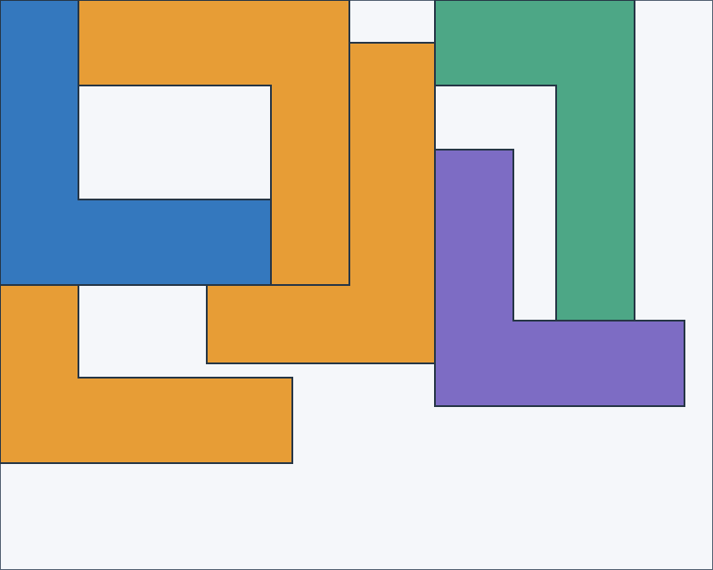
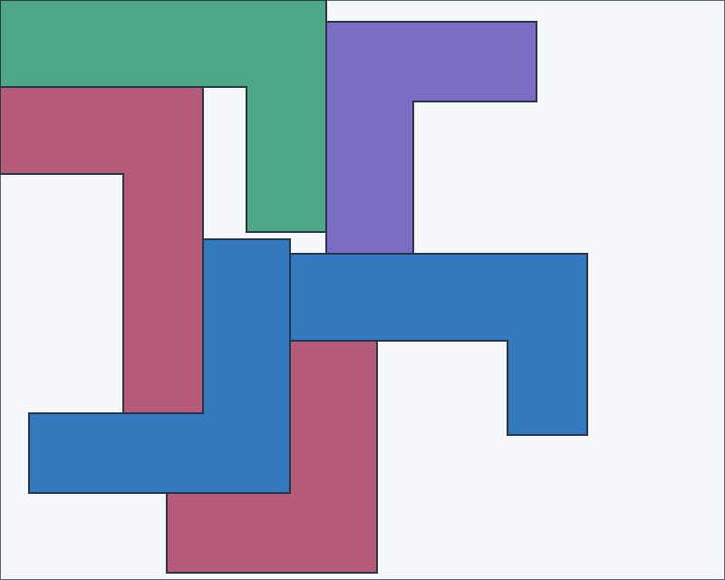
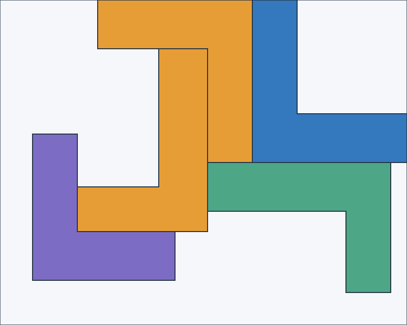
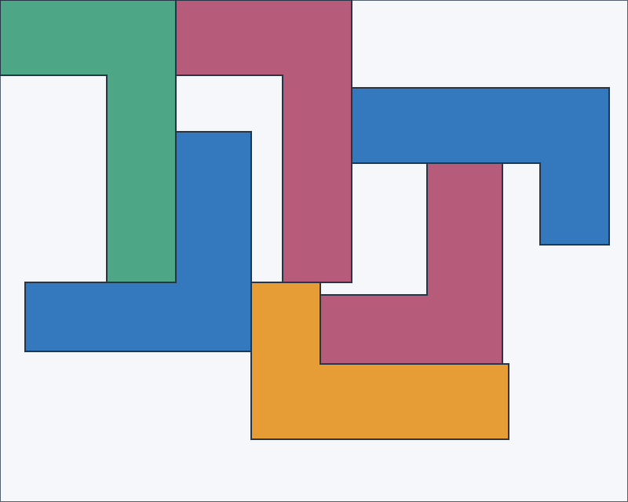

19/20 matched Classic. 0 better, 1 worse, 19 ties by placed-part count then sheet count.
Each recorded choice was tested independently. After that one decision, the geometry engine regenerated candidates and Classic completed the nest. This is not a full Jev policy rollout.
| Changed choice | Classic sheets | After intervention | Classic utilisation | After intervention |
|---|---|---|---|---|
| concave, seed 1, d0 | 2 | 3 | 51.41% | 34.28% |




All replayed layouts passed containment and overlap checks. The sample was limited to the first two moves and contained no outline/cavity features. Drawings show the exact polygon geometry used by the engine.